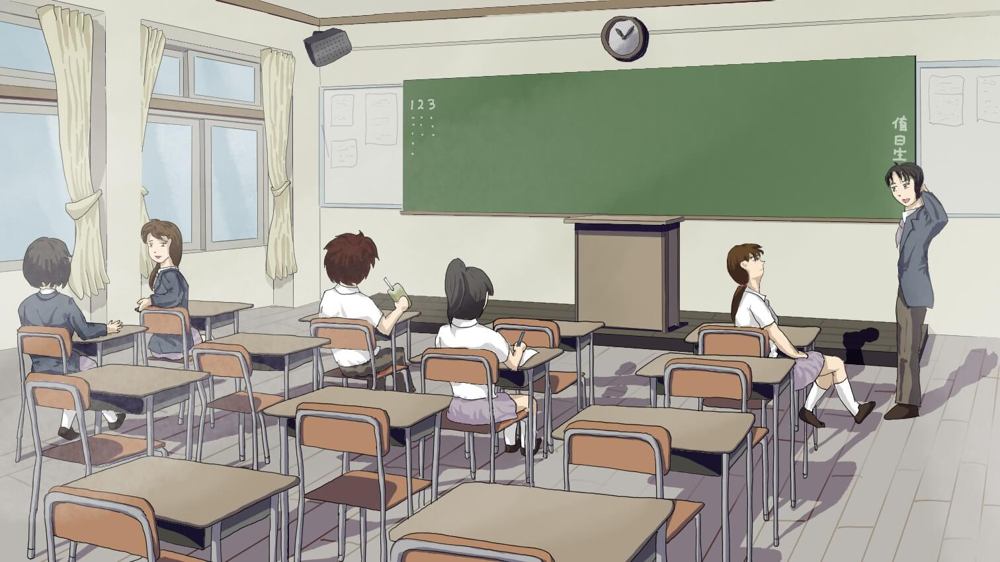

「肯Ｘ基的炸雞肉都是來自基因改造的無頭雞，有照片為證」，聽到這個消息的你、首先會怎麼做？
直接轉貼分享給親朋好友。
存檔下來做成筆記。
親身實驗，將兩種飲料混合起來喝看看。
查詢網路中有無醫師或營養師發表的意見。
「肯Ｘ基的炸雞肉都是來自基因改造的無頭雞，有照片為證」，聽到這個消息的你、首先會怎麼做？
趕快轉貼分享給親朋好友，叫他們不要再吃肯Ｘ基的雞肉。
問一問功課好的同學，他們的看法是如何？
把標題或照片丟到搜尋引擎，找一找有多少相關的報導。
婉君